Formation2020
Baccalauréat STI2D
Sciences et Technologies de l'Industrie et du Développement Durable
Bac technologique à dominante sciences de l'ingénieur : premières bases en électronique, programmation et démarche de projet.
03Parcours
Formation2020
Sciences et Technologies de l'Industrie et du Développement Durable
Bac technologique à dominante sciences de l'ingénieur : premières bases en électronique, programmation et démarche de projet.
Formation2021 - début 2022
Formation orientée systèmes embarqués, électronique et communication numérique.
Projet de fin d'études réalisé en équipe : « Jardin connecté », pour permettre à un jardinier de surveiller et contrôler à distance l'humidité de son sol depuis une interface sur téléphone.
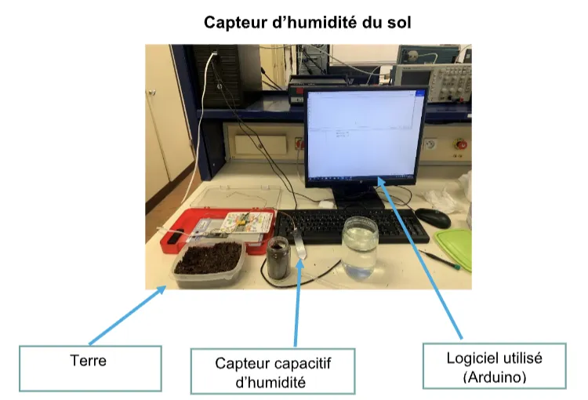
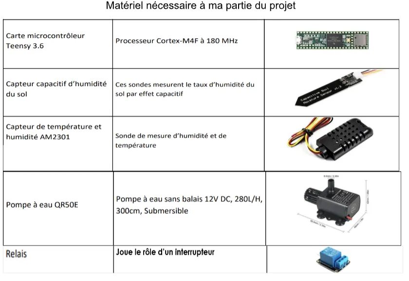
Ma contribution : travail sur le capteur d'humidité, carte Teensy 3.6 et Arduino Uno, programmation en C / C++ (carte) et C# (interface). Le câblage, le prototype et certains composants ont été réalisés avec l'équipe.
Diplôme2022
Certification2022
Certification des compétences numériques.
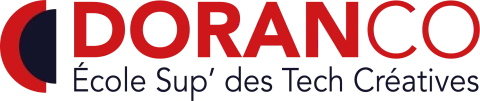
Formation01/2023 - 06/2023
Doranco
Six mois de formation au développement web full stack, avant l'entrée à l'ETNA.
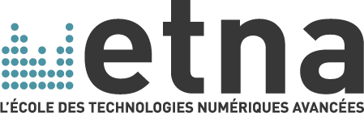
Formation10/2023 - 10/2026
Une formation qui m'a permis de travailler sur des projets techniques en équipe et de développer une approche orientée architecture, développement et résolution de problèmes.
Étapeoct. 2023
Période intensive d'admission, point de départ du cursus ETNA.
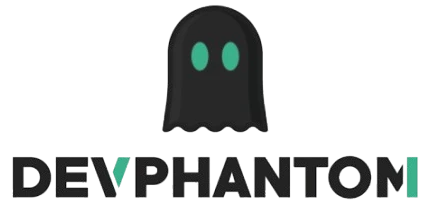
Expérience01/2024 - 10/2026
DevPhantom · en parallèle de l'ETNA · équipe d'environ 4 personnes
Une caractéristique importante de mon profil ici : m'adapter rapidement à un nouveau projet et apprendre les technologies nécessaires au besoin.
Projets DevPhantom · en équipe
Après les rendez-vous clients : compréhension du besoin, récupération des idées et fonctionnalités, définition de la solution, développement ou reprise de projets, création de fonctionnalités et de SaaS. Travail avec Jira, méthodologie Agile, adaptation aux contraintes techniques et métier.
Diplôme2024
Projet ETNAjanv. 2025
Plateforme Web · en équipe de 7
Plateforme web destinée à accompagner les personnes dans leurs projets d'expatriation : checklist personnalisée, sources gouvernementales officielles, comparaison du coût de la vie et des villes, forum modéré, réseau d'experts, messagerie privée, coffre-fort documentaire, dashboard personnalisable et administration.
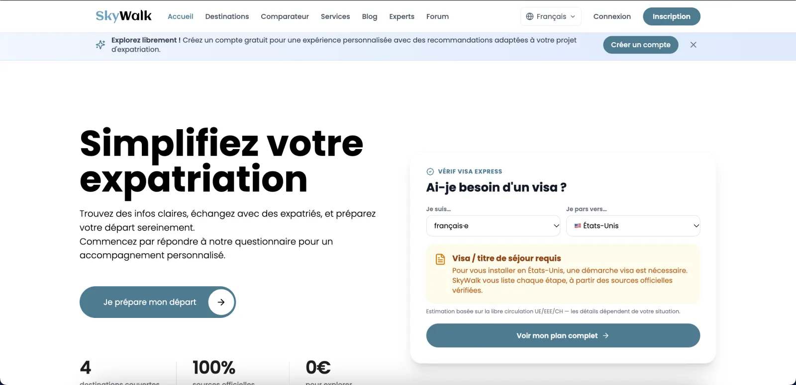
Projet personneljuin 2025
Application Mobile
Teste ta connaissance du Coran : application mobile pour s'entraîner à reconnaître les versets, avec écoute de récitations, plusieurs modes de quiz et suivi de progression.
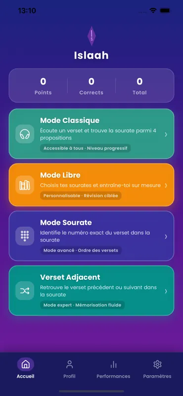
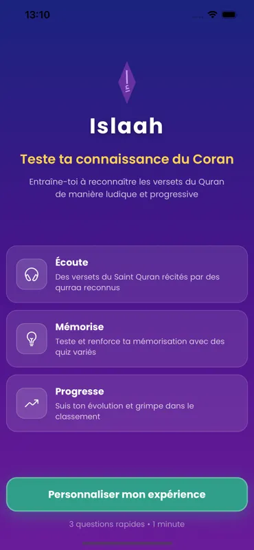
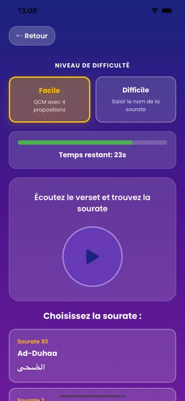
Projet personnelsept. 2025
Projet personnel
Plateforme permettant de rechercher une enseigne qui a besoin d'un site web ou d'une mise à jour.
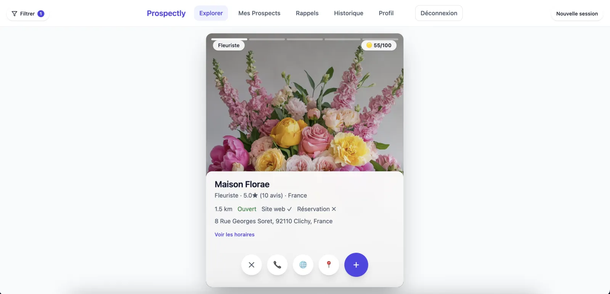
Projet personneljanv. 2026
PWA de planification
Planificateur quotidien minimaliste, à usage strictement personnel (compte unique, pas d'inscription), pensé pour organiser mes journées et ancrer des habitudes de travail.
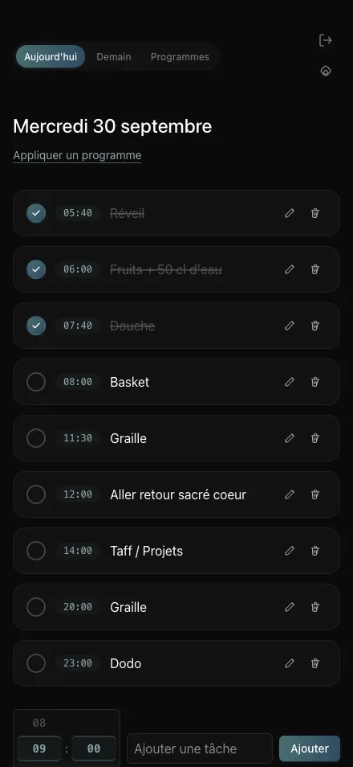
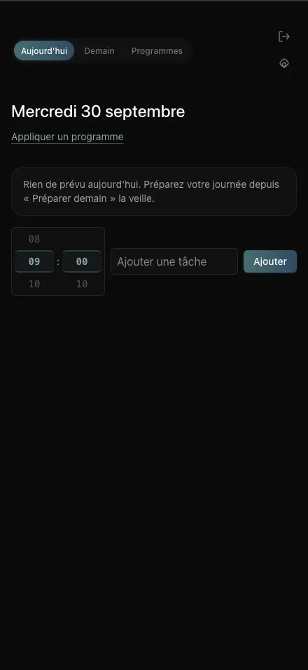
Projet personnelmai 2026
Plateforme de réservation
Site / plateforme de réservation pour une activité touristique au Sénégal : présentation de l'activité, réservation, gestion des disponibilités, intégration calendrier, notifications e-mail, interface responsive et optimisation SEO / données structurées.
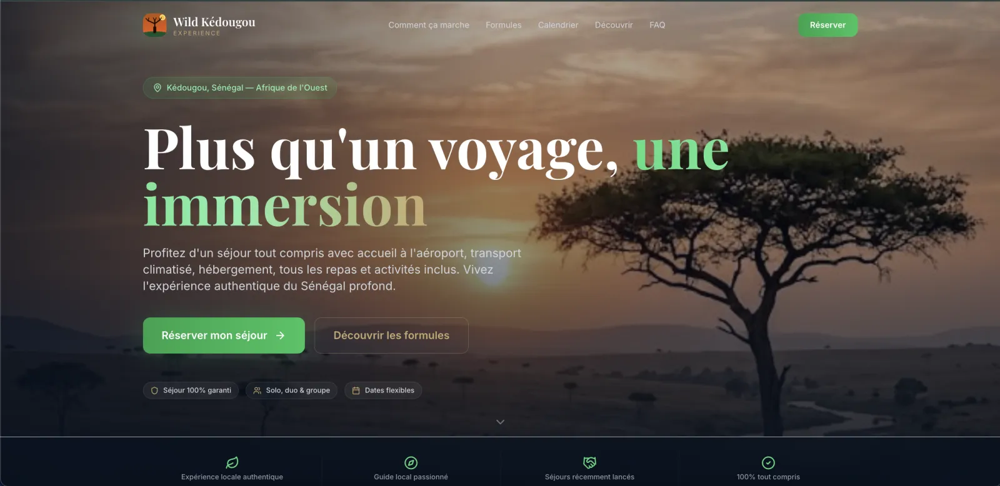
Projet personnelaoût 2026
Site vitrine WordPress · En cours
Projet en cours, réalisé pour un ami : création et intégration d'un site vitrine WordPress.
Projet ETNAaoût 2026
Plateforme de localisation · en binôme
Reproduction de Crowdin : plateforme collaborative de gestion de traductions (localisation).
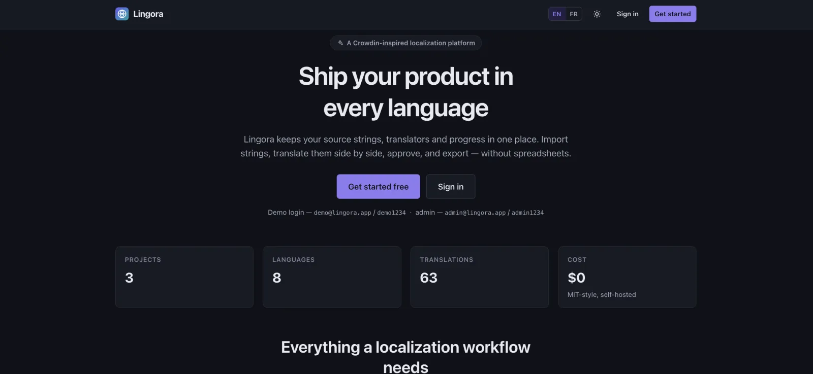
Et ensuite2026
Développeur Web Full Stack · Paris
Je peux m'adapter à un environnement technique existant, comprendre rapidement un projet et apprendre les outils nécessaires pour répondre au besoin.
Diplômeoct. 2026